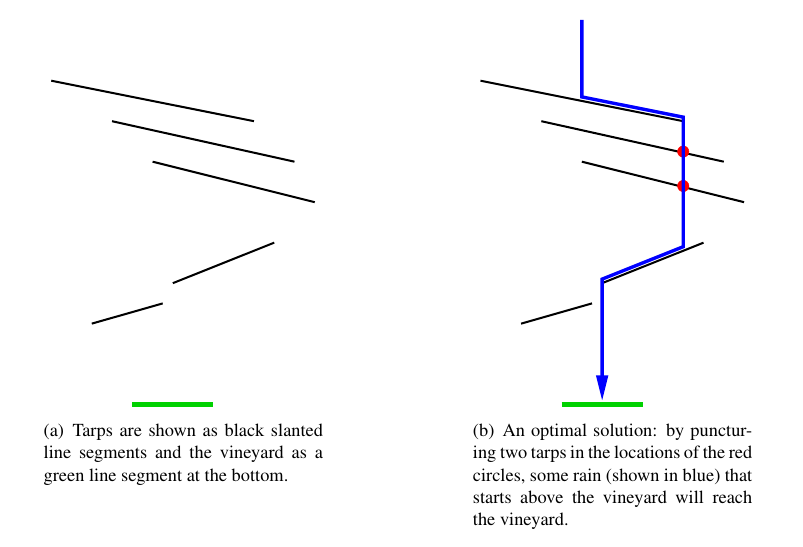

在竖直摆放的二维平面上有 $n$ 条非水平非竖直的木板 (可以看成线段)，对于空中落下的一滴雨 (初始坐标可以视为 $\left( x, + \infty \right)$)，它会不断下落，当其碰到木板时会滑到该木板的较低一端然后继续下落，直到落到 $x$ 轴为止。
你可以在木板上打洞来改变雨水流动的方向，将木板打洞的效果就是将原木板拆成两块木板 (因此雨滴在高处下落时会滑到洞中继续下落)，如下图：
记从 $x_0$ 下落的雨滴下落到 $x$ 轴时的横坐标为 $f \left( x_0 \right)$。给定 $l, r$，求最少打多少个洞，使得存在 $\xi \in \left( l, r \right)$ 满足 $f \left( \xi \right) \in \left( l, r \right)$。
第一行包含三个非负整数 $l, r, n$ ($0 \leq l < r \leq 10^9; 0 \leq n \leq 5 \times 10^5$)，表示要求的区间和木板的数量。
接下来 $n$ 行，每行四个非负整数 $x_1, y_1, x_2, y_2$ ($0 \leq x_1, x_2 \leq 10^9; x_1 \neq x_2; 0 \leq y_1 < y_2 \leq 10^9$)，描述一块木板的两个端点的坐标。保证题中出现过的所有横坐标 ($n$ 对 $\left( x_1, x_2 \right)$ 和 $l, r$) 互不相同，且所有木板两两没有公共点 (含端点)。
输出一行一个整数，表示需要打的洞的个数的最小可能值。
若木板 $A$ 在木板 $B$ 的 "上面" (这里 "上面" 定义为存在 $x_0$ 满足截线 $x = x_0$ 与两个木板均相交，且与 $A$ 的交点的纵坐标大于与 $B$ 的交点纵坐标)，则连接一条 $A \to B$ 的有向边。这样可以得到一张有向图 $G$。
显然 $G$ 是有向无环图，因为雨滴的坐标单调递减。我们考虑求出 $G$ 的拓扑序。
暴力求拓扑序是 $O \left( n^2 \right)$ 的，因此考虑快速求 $G$ 的拓扑序。注意到 $G$ 的拓扑序并没有明显的性质 (不能单纯地通过横纵坐标的大小来比较)，因此考虑使用扫描线来优化建图。
因为每一条边都可以看成在某个木板的端点处的情形，因此我们只需考虑在扫描线遇到每个事件 (插入线段/删除线段) 时处理即可。
删除线段显然没什么要处理的，对于插入线段只需要在插入时向平衡树中它的前趋后继各连一条有向边 (注意方向) 即可。
使用 std::set 维护，即可在 $O \left( n \log n \right)$ 的时间内得到一个拓扑序。
得到拓扑序后，考虑 DP 求解原问题。
题目中的 $2 n + 2$ 个横坐标将 $\mathbb R$ 分成了 $2 n + 3$ 段。对于每一段，其中的所有点显然是地位相同的，因此也具有相同的答案。
因此我们用 $f_{i, j}$ 表示考虑了拓扑序的最后 $i$ 个元素后 (最下面 $i$ 块木板)，第 $j$ 个区间的雨要落到 $\left( l, r \right)$ 中所需的最小打洞数，若不可能则为 $+ \infty$。
考虑转移。不妨设这块木板是左低右高的，设该木板跨越了第 $l \sim r$ 段，则考虑洞的位置，可得 $$ f_{i, j} = \min \left\{ f_{i - 1, l - 1}, 1 + \min_{l \leq k \leq j} f_{i - 1, k} \quad \left( l \leq i \leq r \right) \right\} \tag 1 \label 1 $$
其中 $f_{i - 1, l - 1}$ 表示洞在 $i$ 右边或根本没打洞。
但是暴力模拟这个过程是 $O \left( n^2 \right)$ 的，因此考虑使用数据结构优化。记数组 $\boldsymbol f_i = \left\{ f_{i, j} \right\}_{0 \leq j \leq 2 n + 2}$，则每一块木板对 $\boldsymbol f_i$ 的木板可以描述成：
对 $i = l, l + 1, \cdots, r$，令 $f_j \gets f_j + 1$。
对 $i = l, l + 1, \cdots, r$，依次令 $f_j \downarrow f_{j-1}$ ($f_j \gets \min \left\{ f_j, f_{j-1} \right\}$)，即取前缀 $\min$ 操作。
考虑使用数据结构维护。使用类似线段树 Beats 的思想，"暴力" 地维护它。注意到进行前缀 $\min$ 和后缀 $\min$ 操作后整个序列会变成单调序列，因此可以在线段树上每个节点维护该区间是否是单调递增以及是否单调递减，如果是则前缀 $\min$，后缀 $\min$ 相当于不超过一次区间赋值，否则暴力递归两棵子树。
时间复杂度分析类似 Chtholly 树，不超过 $O \left( n \log^2 n \right)$。
#include <bits/stdc++.h>
#define EB push_back
using std::cin;
using std::cout;
typedef unsigned int u32;
typedef long long ll;
typedef std::pair <int, int> pr;
typedef std::tuple <int, int, int> tuple;
const int N = 500054, M = N * 4, INF = 0x3f3f3f3f;
struct segment {
int x1, y1, x2, y2;
friend std::istream & operator >> (std::istream &in, segment &B) {return in >> B.x1 >> B.y1 >> B.x2 >> B.y2;}
} seg[N];
int n, m, E = 0, ans = INF;
int to[M], first[N], next[M];
int deg[N], topo[N];
inline void down(int &x, const int y) {x > y ? x = y : 0;}
inline int min(const int x, const int y) {return x < y ? x : y;}
inline int max(const int x, const int y) {return x < y ? y : x;}
inline void addedge(int u, int v) {to[++E] = v, next[E] = first[u], first[u] = E, ++deg[v];}
void toposort() {
int i, h, t = 0, x, y;
for (i = 0; i < n; ++i) if (!deg[i]) topo[t++] = i;
for (h = 0; h < t; ++h)
for (i = first[x = topo[h]]; i; i = next[i])
if (!--deg[y = to[i]]) topo[t++] = y;
assert(t == n);
}
namespace G {
typedef bool (*cmpFn)(const int &, const int &);
typedef std::set <int, cmpFn> set;
struct sweepLine {
int x, id;
sweepLine (int x_ = 0., int id_ = 0) : x(x_), id(id_) {}
inline bool operator < (const sweepLine &B) const {return x < B.x || (x == B.x && id > B.id);}
} sl[2 * N];
int X;
inline double getY(int id, int x0) {
if (id == INT_MIN) return -INFINITY;
if (id == INT_MAX) return INFINITY;
return (double)((ll)seg[id].x1 * seg[id].y2 - (ll)seg[id].x2 * seg[id].y1 + (ll)x0 * (seg[id].y1 - seg[id].y2)) / (double)(seg[id].x1 - seg[id].x2);
}
inline bool slCmp(const int &x, const int &y) {return getY(x, X) < getY(y, X);}
set s(slCmp);
void main() {
int i, j, l, r;
set::iterator it;
for (i = 0; i < n; ++i)
std::tie(l, r) = std::minmax(seg[i].x1, seg[i].x2),
sl[i] = sweepLine(l, i), sl[i + n] = sweepLine(r, i + n);
std::sort(sl, sl + 2 * n), s.insert(INT_MIN), s.insert(INT_MAX);
for (j = 0; j < 2 * n; ++j) {
i = sl[j].id, X = sl[j].x;
if (i < n) {
it = s.lower_bound(i);
if ((u32)*it < (u32)n) addedge(i, *it);
if ((u32)*--it < (u32)n) addedge(*it, i);
s.emplace_hint(it, i);
} else
s.erase(i - n);
}
}
}
namespace DC {
int F[2 * N]; pr D[2 * N];
int Discretize(int n) {
int i, cnt = 0; std::sort(D, D + n);
for (i = 0; i < n; ++i)
F[D[i].second] = (i && D[i].first == D[i - 1].first ? cnt - 1 : (D[cnt] = D[i], cnt++));
return cnt;
}
}
namespace ST {
#define segc int M = (L + R - 1) >> 1, lc = id << 1, rc = lc | 1
#define exist_pd if (~x[id].cov || x[id].add) push_down(x[id], x[lc], x[rc])
struct node {int min, max, cov, add; bool asc, desc;} x[2100000];
inline void update(node &ret, const node &l, const node &r) {
ret.min = min(l.min, r.min), ret.max = max(l.max, r.max),
ret.asc = l.asc && r.asc && l.max <= r.min,
ret.desc = l.desc && r.desc && l.min >= r.max;
}
inline void cover(node &ret, int x) {ret.min = ret.max = ret.cov = x, ret.add = 0, ret.asc = ret.desc = true;}
inline void add(node &ret, int x) {ret.min += x, ret.max += x, (~ret.cov ? ret.cov : ret.add) += x;}
inline void push_down(node &ret, node &l, node &r) {
if (~ret.cov) cover(l, ret.cov), cover(r, ret.cov), ret.cov = -1;
else if (ret.add) add(l, ret.add), add(r, ret.add), ret.add = 0;
}
void build(int id, int L, int R, int ql, int qr) {
x[id].cov = -1, x[id].add = 0;
if (L == R) {x[id].min = x[id].max = (ql <= L && R <= qr ? 0 : INF), x[id].asc = x[id].desc = true; return;}
segc; build(lc, L, M, ql, qr), build(rc, M + 1, R, ql, qr);
update(x[id], x[lc], x[rc]);
}
void add(int id, int L, int R, int ql, int qr, int v) {
if (ql <= L && R <= qr) return add(x[id], v);
segc; exist_pd;
if (ql <= M) add(lc, L, M, ql, qr, v);
if (qr > M) add(rc, M + 1, R, ql, qr, v);
update(x[id], x[lc], x[rc]);
}
int X;
void __builtin_desc(int id, int L, int R) {
if (X <= x[id].min) return cover(x[id], X);
if (X >= x[id].max && x[id].desc) {X = x[id].min; return;}
segc; exist_pd; __builtin_desc(lc, L, M), __builtin_desc(rc, M + 1, R),
update(x[id], x[lc], x[rc]);
}
void desc(int id, int L, int R, int ql, int qr) {
if (ql <= L && R <= qr) return __builtin_desc(id, L, R);
segc; exist_pd;
if (ql <= M) desc(lc, L, M, ql, qr);
if (qr > M) desc(rc, M + 1, R, ql, qr);
update(x[id], x[lc], x[rc]);
}
void __builtin_asc(int id, int L, int R) {
if (X <= x[id].min) return cover(x[id], X);
if (X >= x[id].max && x[id].asc) {X = x[id].min; return;}
segc; exist_pd; __builtin_asc(rc, M + 1, R), __builtin_asc(lc, L, M);
update(x[id], x[lc], x[rc]);
}
void asc(int id, int L, int R, int ql, int qr) {
if (ql <= L && R <= qr) return __builtin_asc(id, L, R);
segc; exist_pd;
if (qr > M) asc(rc, M + 1, R, ql, qr);
if (ql <= M) asc(lc, L, M, ql, qr);
update(x[id], x[lc], x[rc]);
}
void sweep(int id, int L, int R, int ql, int qr) {
if (L == R) return down(ans, x[id].min);
segc; exist_pd;
if (ql <= M) sweep(lc, L, M, ql, qr);
if (qr > M) sweep(rc, M + 1, R, ql, qr);
}
}
int main() {
int i, x, L, R;
std::ios::sync_with_stdio(false), cin.tie(NULL);
cin >> L >> R >> n;
for (i = 0; i < n; ++i) cin >> seg[i];
G::main(), toposort();
for (i = 0; i < n; ++i)
DC::D[i] = pr(seg[i].x1, i),
DC::D[i + n] = pr(seg[i].x2, i + n);
DC::D[2 * n] = pr(L, 2 * n), DC::D[2 * n + 1] = pr(R, 2 * n + 1),
m = DC::Discretize(2 * n + 2), L = DC::F[2 * n], R = DC::F[2 * n + 1],
ST::build(1, 0, m, L + 1, R);
for (i = 0; i < n; ++i) {
x = topo[i], L = DC::F[x], R = DC::F[x + n], ST::X = INF;
if (L < R)
ST::add(1, 0, m, L + 1, R, 1), ST::desc(1, 0, m, L, R);
else if (L > R)
ST::add(1, 0, m, R + 1, L, 1), ST::asc(1, 0, m, R + 1, L + 1);
else throw "daklqw";
}
L = DC::F[2 * n], R = DC::F[2 * n + 1],
ST::sweep(1, 0, m, L + 1, R), cout << ans << '\n';
return 0;
}
坑1：注意细致分析转移方程，操作是取前缀 $\min$ 而不是区间对一个数 ($f_{i-1, l-1}$) 取 $\min$。
坑2：线段树操作时注意及时 return;，防止复杂度退化。
坑3：本题的线段树有两个标记 (区间赋值和区间加)，在标记复合和下传时注意写法。